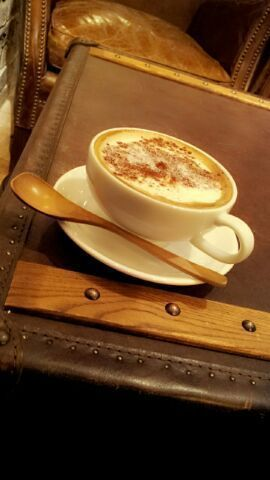

| 2013/01 26 Sat | 川村真洋 お台場合衆国ライヴでの楽しかったー 発言☆! ! Rotty★ |
ほっほーい //
Rotty★です )))
初めて載せる(〃▽〃)
いやん(/-＼*)
Rottyの金髪ショート ☆
...
DOU? ←どう
ほほぉ〜
私が男になると
こんな感じなのかな...?
そーだ、
自分ではよく分からないけど
自分の顔立ちって人から見たら
どー感じられてるんだろう(´・ヾ・)?
って思わない?
童顔、大人っぽい分類?
女顔、男顔?
動物に例えたら何系?
えー、よかったら
まひろの顔ってどんなん?
教えてくだちい。(/´・▽・)/
よろちくん♪
本当に自分って
よう分からん◎ω◎ 笑
でさーでさー
はい、ぴょんっ )))
(話とんだ)
お台場合衆国ライヴ
実際やテレビでね
見て頂いてくれた方は
知ってると思うんですが、
あの ライヴが終わった後の
トークでれいかが
「今日はどうだったー?」って
メンバーに質問を投げ掛けたんですよ、
そしたらメンバー全員がひたすら
「楽しかったー(/◎▽◎)/」
「楽しかったー(/◎ω◎)/」
「楽しかったwwww★」
としか言わない...
あ、この子たちは
本当に楽しかったんだ(・∀・)
良かったぢゃん!
みたいな感じになったんですけど
あれいい始めたの
実はまひろやった... 笑
あのねえ、あのねえっ)))
説明すると、、
前日にリハーサルをやってね
そのトークの流れをしてる時に
れいかが「今日はどうだったー?」
って聞いたから
まひろが
「楽しかったーーー(・▽・)
☆キラーン」みたいな感じで
一歩踏み出して
言っちゃったんですよ...
ぢゃあ皆がまひろの
しゃべり方 まねしながら
次々に関西べんで
「楽しかったー、楽しかったー」
ゆうて、
ほなら
「焼き肉食べたーい、
焼き肉食べたーい。」とかまで
言い出して
...
まあ明日本番はちゃんとコメント
しよぉ(>ω<)
って言ってたのに、
本番、本間にめちゃ楽しかったんで
「楽しかったー」に
なってしまったとゆう...
(・▽・)ケッ☆! !笑
ライヴしたい。
ライヴしたい。
ヾ( □〕・〇・〔□ )〃
...
ぴょんっ! !
でさー、
前回のblogコメント
読んだべー(／〃▽〃)／
サンキューです♪
めちゃ皆のこと知れたし
アドバイスくれたね ヾ(>ω<)てへ
そうだねぇ〜
毎日ストレッチしてから
家出る癖ついてるし
毎日お風呂は絶対つかって
温まってるし
姿勢も良いって言われるしなあ...
やのになんでこんな ,' ,' (´；ω；｀)
でもね、携帯使ってる時は
やっぱ、首ちょっと前に
出ちゃう。
コメントとか読む時
どーしても画面に近づけて
しまうよね(・▽・)
あと、枕変えた方がいいのかな?って思ったよ ♪／
皆色々ありがとう(*^^*)
今日も、１日お疲れ様でした...
大好きよ ^^
〜ティラミスラテ−

おやすみなさい〃_〃のし